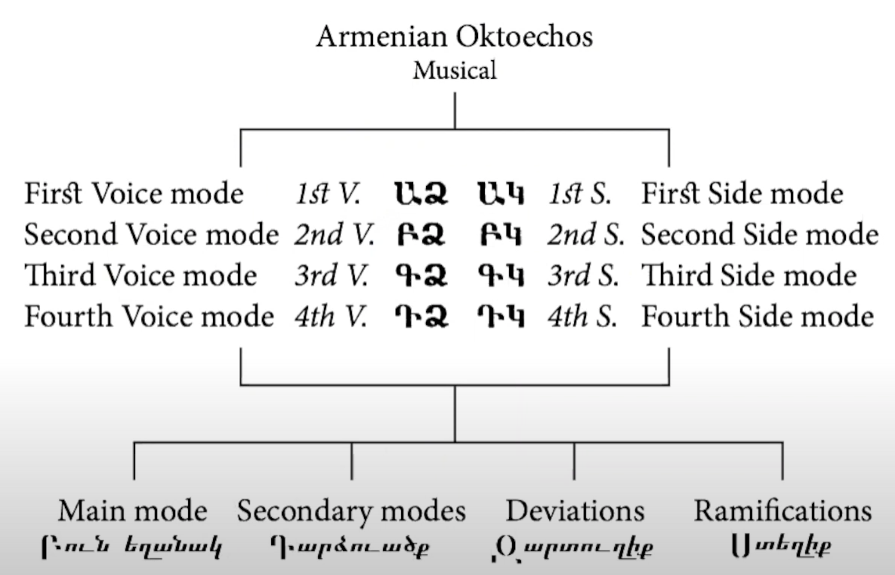

**Armenian Identity Through Music**
Overview
==============================================================
This is a blog post that analyzes, demonstrates, and describes how the Armenian Diaspora finds its identity through Armenian popular music around the world. Through the use of written, aural, and visual resources, this page walks through the background, techniques, and development of Armenian music that covers the 20th and 21st centuries. There are two major topics, the first being the major works of Gomidas in the early 1900s, and the second being the development of Armenian popular music in various places around the world. These main ideas will be supplemented by brief discussions regarding the Armenian music system and instruments, the role of music in Armenian society, the Armenian Genocide, the annexation of Armenia by the USSR, and the Lebanese Civil War. This discussion spanning over 100 years of music development will demonstrate how Armenian popular music evolved and contributed to the Armenian identity throughout history.
Background
==============================================================
The focus of this blog is identity through Armenian music since the 20th century. Therefore, background discussion may be simplified and incomplete.
**Armenian Music System**

Early Armenian chant music adhered to an 8-mode system known as *octoechos* (Armenian: ութ ձայն - literally "eight voices"). This system has two different practices: liturgical and musical. The liturgical practice has the 8 modes evenly split into voice modes (first voice, second voice, etc.) and side modes (first side, second side, etc.). These divisions can be compared to the authentic and plagal divisions of Gregorian chant. The musical modes are also split up as such, but also has 4 further subdivisions: main mode, secondary modes, deviations, and ramifications.
These subdivisions exist due to a specific subset of liturgical music known as *sharagan*, which made use of a tetrachordal system with non-Western intervals. Some of these intermediate intervals are major and minor semitones, subminor thirds, medium thirds, and pure major thirds. Taking some combination of three of these intervals forms a tetrachord species that fits into one of the octoechos subdivisions. For further details, especially with regard to the connection to the liturgical year, please check out the video by the Kerovpyan's referenced in the bibliography.
**Traditional Instruments**
Talk about instruments.
Testing Stuff
================
Below is an excerpt from a song I transcribed (testing audio w/ HTML).
Bibliography
==============================================================
Adriaans, Rik. “Staging Sassoun: Memory and Music Video in Post-Soviet Armenia.” Social Analysis: The International Journal of Anthropology
60, no. 3 (2016): 17-35.
Apelian, Vahe. “Armenian Pop Music Spring.” V.H. Apelian’s Blog (blog). June 19, 2017. https://vhapelian.blogspot.com/search?q=music
Alajaji, Sylvia. “Exilic Becomings: Post-Genocide Armenian Music in Lebanon.” Ethnomusicology 57, no. 2 (2013): 236-260.
Alajaji, Sylvia. Music and the Armenian Diaspora: Searching for Home in Exile. Indiana University Press, 2015.
Borcherdt, Donn. “Armenian Folk Songs and Dances in the Fresno and Los Angeles Areas.” Western Folklore 18, no. 1 (1959): 1-12.
Chacko, Rachel. “Finding Armenia in Alan Hovhaness's Symphony No. 8 (Arjuna) and Madras Sonata.” American Music 37, no. 1 (2019): 77-94.
Davidjants, Brigitta. “Identity Construction in Armenian Music on the Example of Early Folklore Movement.” Folklore (Estonia) 62, no. 7 (2015): 175-200.
Kassabian, Anahid. “Improvising Diasporan Identities: Armenian Jazz.” In Ubiquitous Listening: Affect, Attention, and Distributed Subjectivity, 73–83. University of California Press, 2013.
Kerovpyan, Aram and Kerovpyan, Virginia. “Music with Aram and Virginia Kerovpyan: Musical modes and the Armenian Eight-Mode system.” Armenian Institute. June 24, 2020. Video, 43:25. https://www.youtube.com/watch?v=XEY-JVq3BBM
Michaelian, Andranik and Steiner, Hermelinde. “Traditional music and instruments of Armenia.” Face Music. March 2016. http://www.face-music.ch/instrum/armenia_instrum_en.html
Nercessian, Andy. “A Look at the Emergence of the Concept of National Culture in Armenia: The Former Soviet Folk Ensemble.” International Review of the Aesthetics and Sociology of Music 31, no. 1 (2000): 79-94.
Safi, Omid. “Music and Political Identity in the Armenian Diaspora.” Duke University. September 22, 2015. Video, 9:47. https://www.youtube.com/watch?v=TFKHzdLFDU8
Tchilingirian, Hratch. “What is ‘Armenian’ in Armenian Identity.” The Armenian Mirror-Spectator. February 2018. https://mirrorspectator.com/2018/02/22/armenian-armenian-identity/
Vagramian-Nishanian, Violet. “Gomidas Vartabed: Pioneer Of Armenian Folk Music.” The Choral Journal 22, no. 3 (1981): 5-8.
About
==============================================================
This research and site was done by Jack Bouhanna for 21M.500 at the Massachusetts Institute of Technology, Spring 2021.
Special thanks to Joe Dagdigian, Alyssa Mathias, Leon Janikian, Hripsime Mkrtchyan, Garo Saraydarian, and Leslie Tilley
Questions, comments, errors, suggestions? Please contact me at jack.bouhanna@gmail.com